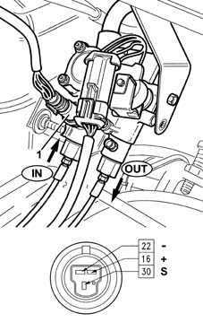

1043BB LPG pressure sensor check
- Path
- Test > 10 ENGINE UNIT > 1043 LGP TANK AND PIPES > 1043B gpl fuel circuit pipes > 1043BB LPG pressure sensor check
- Kind
- test / check procedure
- Applies to
- engines: 1.6 16v; all production periods; only with equipment: GPOWER
- Interactive page
- https://sloeber94.github.io/elrnDB-fMltpl/en/#/2892376
Applies to: engines: 1.6 16v; all production periods; only with equipment: GPOWER
With the ignition 'on', check that the sensor supply is about 5 V. Check with the engine running that the sensor ouptut voltage (S) is between 1 and 4 V.
 | Name | Connector |
|---|---|---|
1 | GPL pressure sensor |
